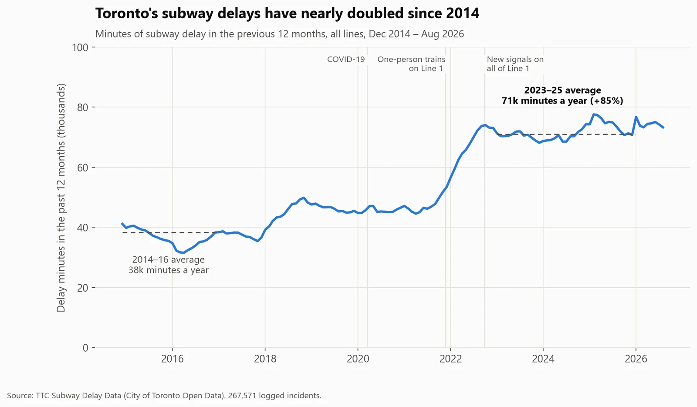
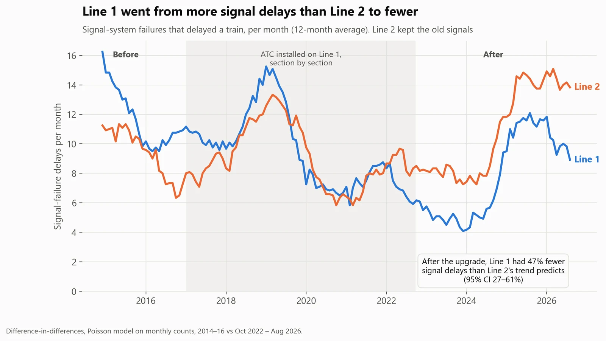
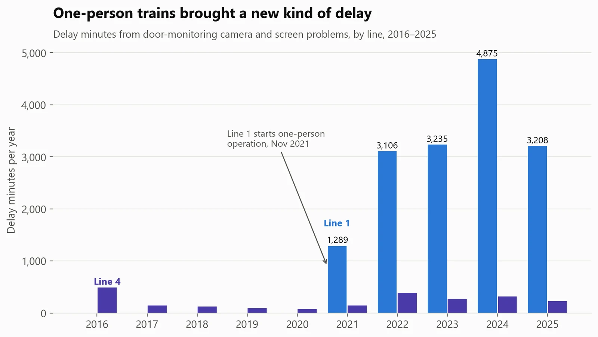
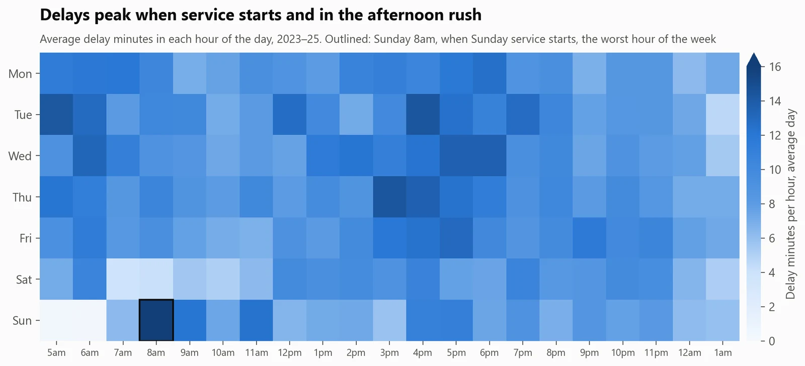
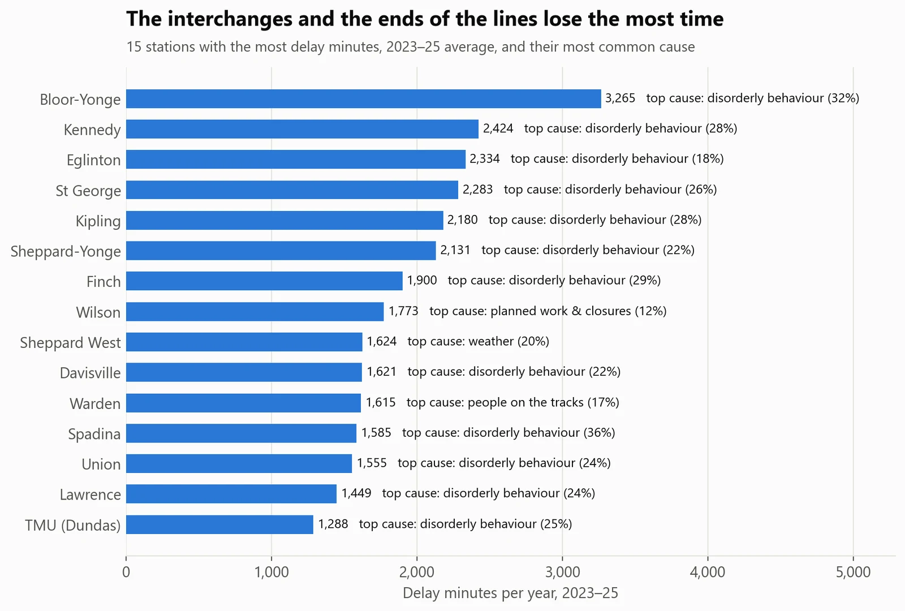

Transit operations · Toronto
Toronto's subway delays nearly doubled. What's behind them?
- Business question
- Where should the TTC focus to cut subway delays?
- Key finding
- On passenger and public incidents, not the trains. Delay minutes rose 85% since 2014 and these incidents caused three-quarters of the increase, while train breakdowns fell 12%. Line 1's new signal system also halved its signal delays.
- Recommendation
- Spend where the minutes went: faster response to passenger, security and track-level incidents (57% of delay minutes) and Line 1's door cameras. Line 1's results support upgrading Line 2's signals.
- Estimated impact
- 76%Of the increase in delays comes from passengers and the public, not the trains. Passenger and public incidents now cost about 40,600 delay minutes a year, so every 10% cut in them saves about 4,000.
- Data
- 267,571 TTC subway incidents, January 2014 to August 2026 (City of Toronto Open Data)
- Methods
- Data cleaning, SQL modelling, difference-in-differences
- Tools
- SQL (DuckDB), Python: pandas, statsmodels
Results






How I did it
- Downloaded 12 years of delay logs (23 Excel sheets and a CSV) from Toronto's open-data API.
- Cleaned hand-typed fields: 111 spellings of the subway line became 5 values, and 2,221 spellings of locations were matched to the 75 stations with an alias list and fuzzy matching (99.9% resolved). I also repaired the TTC's double-encoded code list and removed 271 duplicate rows.
- Grouped 234 TTC delay codes into 13 plain-English causes, and built the analysis tables in SQL with 18 automated data-quality checks. The checks caught real problems, such as duplicates that differed only in a junk direction value.
- Tested Line 1's new signal system against Line 2 with a difference-in-differences model, and checked it three ways: the two lines moved in parallel before the upgrade, using Line 4 as the comparison gives the same answer, and non-signal delays (a placebo) didn't improve.
What could make this wrong
- Delay minutes measure the service, not passengers: a delay at 8am affects more riders than one at 11pm, and the data has no ridership.
- Some of the rise in disorderly-behaviour incidents may be more reporting, since the city added safety staff in January 2023.
- The signal comparison assumes Line 2 shows what Line 1 would have done without the upgrade.
What I learned
- Most of the work was cleaning: 111 spellings of a subway line and 2,221 spellings of its stations. The automated checks caught problems I'd never have spotted by eye.
- A comparison group turns 'before and after' into evidence. Line 2 showed what Line 1 would have done without its upgrade.
- New technology brings new failure modes: the signal upgrade removed old faults but added new ones, and one-person trains added door-camera delays.
What I'd do next
- Add ridership, so delays are weighted by the number of passengers they hit, not just minutes.
- Get time-to-clear for each incident type, to find which response steps take longest.
- Repeat the signal comparison when Line 2's upgrade starts.
- Turn the marts into a monthly operations dashboard by line, station and cause.